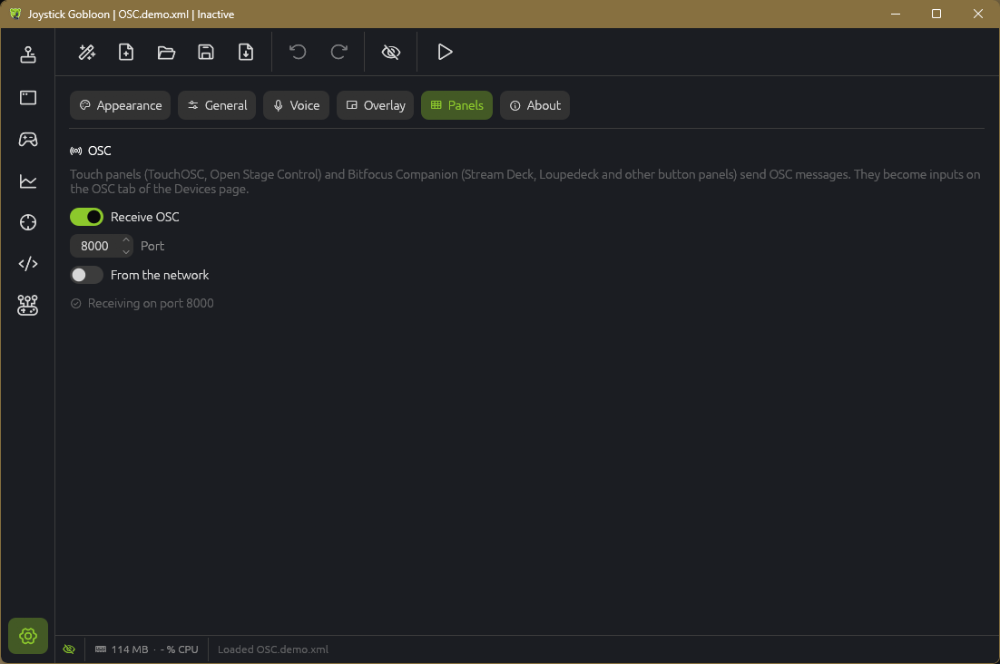
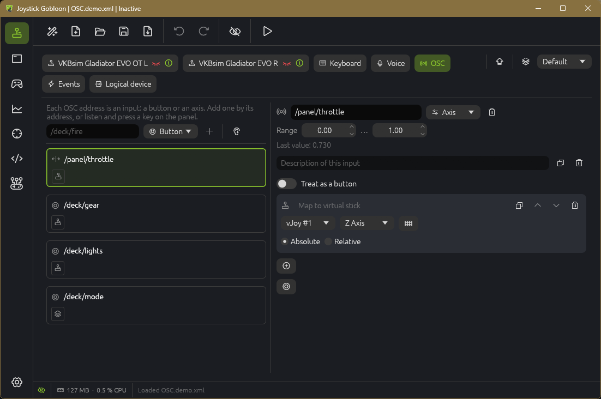
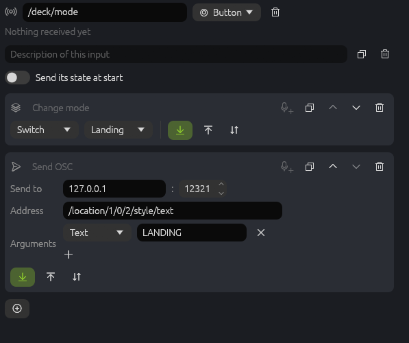

A Stream Deck, a Loupedeck or a touch panel on your tablet becomes one more controller: its keys work like joystick buttons, its faders like axes, with every action, mode and modifier. And the profile can write back, so the keys show the mode you are in.
The idea
How it works
Panels talk OSC (Open Sound Control): small network messages with an address such as /deck/gear and a value. Joystick Gobloon listens for them, and every address you add becomes an input on the OSC tab of the Devices page, a button or an axis. You give it actions like any stick button: Map to virtual stick, a key, a macro, a mode change.
A Stream Deck does not speak OSC itself. Bitfocus Companion, a free program for Windows, Linux and macOS, runs the Stream Deck and sends an OSC message when a key goes down or up. Companion also drives a Loupedeck, an X-keys and many other button panels, so all of them work the same way. Touch panel apps such as TouchOSC and Open Stage Control send OSC directly.
The Send OSC action goes the other way: it sends a message from the profile, so a key's text or color can follow the mode, or a light on the panel can show that the gear is down.
What you need
Joystick Gobloon on Windows or Linux.
For a Stream Deck or another button panel: Bitfocus Companion 3 or newer, with its Generic: OSC connection. Close the Elgato Stream Deck software while Companion runs: only one program can use the Stream Deck.
For a touch panel: an OSC app on your tablet or phone, on the same network as the computer.
This computer or the network
OSC messages have no password: whoever can send them can press your inputs. So Joystick Gobloon listens only to programs on this computer, which is all Companion needs when it runs on the same PC. A tablet or another computer needs From the network on (below); turn it on only at home or on another network you trust. The first time, Windows asks whether Joystick Gobloon may use the network: allow it for private networks.
OSC messages only press inputs of the profile. They never start programs or change settings.
Stream Deck with Companion
1. Receive OSC
Open Settings, Panels and switch on Receive OSC. The port is where panels send to, 8000 unless you change it. The line below says Receiving on port 8000 once it works; if another program has the port, it says so, and you pick another one (and use the same in Companion).

2. Companion
Install and start Companion and open its web page (the launcher has a button for it). Your Stream Deck shows up under Surfaces. Under Connections, add Generic: OSC and set its target: host 127.0.0.1, port 8000 (the port from step 1). Companion running on another computer needs that computer's address in Joystick Gobloon's place and From the network on.
3. A key sends a message
In Companion's Buttons page, pick a key and give it a name to show, such as GEAR. Under Press actions, add the OSC connection's Send integer with the path /deck/gear and the value 1; under Release actions, the same path with 0. Now Joystick Gobloon sees the key held exactly as long as you hold it, so Short / long press, holds and modifiers all work.
Any path works as long as each key has its own; /deck/ and a name keep them easy to tell apart. A key that only needs a tap can send Send message without arguments on press alone: Joystick Gobloon takes that as a short press (0.1 s).
4. The input in Joystick Gobloon
Open the OSC tab on the Devices page. The quickest way to add a key: click the ear, then press the key on the Stream Deck. Its address is added as a button input and selected. You can also type the address and click the plus. Then add actions to it on the right, as for any button.
The head of the editor shows the address (click to change it), whether the input is a Button or an Axis, and the last value that arrived, which tells you at once whether messages come through. The bin removes the input with its actions. With Follow the input in use (Settings, General) on, pressing a key on the panel selects its input, like a stick button.

5. Back to the keys
Companion listens for OSC too, on port 12321 (switch on its OSC listener in Companion's settings if it is off). The Send OSC action sends to it, and starts with that address and port. Companion's own paths change its keys:
/location/1/0/2/style/text with a text
Sets the text of the key on page 1, row 0, column 2 (rows and columns count from 0, the top left key is 0/0).
/location/1/0/2/style/bgcolor with three integers
Sets the key's background color: red, green and blue, 0 to 255 each.
/custom-variable/mode/value with a text
Sets a Companion custom variable; keys can show the variable in their text.
Put the Send OSC action on the Events tab's Mode enter in each mode, and the Stream Deck always shows the mode you are in. On the key that changes the mode itself works too: the picture shows a key that switches to Landing and writes LANDING on its own key.

Touch panels
Setting one up
Switch on From the network in Settings, Panels. In the panel app, set the OSC target to the computer's address on your network (on Windows, ipconfig lists it as IPv4 address, such as 192.168.1.20) and the port from the settings. Give each control its own address, then add them on the OSC tab: click the ear and touch the control.
To light up controls on the panel, give Send OSC actions the tablet's address and the port the app listens on.
Faders and their range
A fader or a knob is an Axis input. When you add one by listening, a value between the ends makes it an axis by itself; one added while at an end (0 or 1) comes in as a button, and the list next to its address turns it into an axis. Most panels send 0 to 1, which is the axis's whole travel. A panel that sends other numbers, such as 0 to 127, gets them in Range: the first number is one end of the axis, the second the other, so swapping them turns the axis around.
The address must match an input exactly, capital letters too. Only the first value of a message counts:
Button: 0.5 and up presses it (1, 1.0 or true), less lets it go (0, 0.0 or false). A message without a number is a short press of 0.1 s; another one while the button is still down keeps it down for another 0.1 s.
Axis: the number is placed within the range; numbers beyond it stop at the end. A message without a number does nothing.
Text that reads as a number counts as that number; other text counts as no number. Messages inside a bundle all count, in order.
Send OSC sends the address and its arguments in order: integers, numbers, text, true or false, and Input value, the value of the input that runs the action (0 to 1 for an axis, 1 or 0 for a button).
When something is off
The OSC tab says receiving is off: switch on Receive OSC in Settings, Panels; the button on the tab goes there.
The port is taken: another program listens on it. Choose another port in Settings, Panels and the same one in Companion or the panel app.
Nothing is received: check the target in Companion (host 127.0.0.1, the port from the settings). From a tablet: From the network on, the computer's address in the app, both on the same network, and Joystick Gobloon allowed in the Windows firewall for private networks.
Received, but nothing happens: the profile must be active, and the address must be exactly the input's. The Last value line shows what arrived for an input.
A key presses but never lets go: Companion sends a release only if the key has a release action. Add the same path with 0 under Release actions, or send a message without arguments for a short press.
Companion's keys do not change: switch on Companion's OSC listener and check its port (12321) in the Send OSC action. The path counts rows and columns from 0.
Still stuck? Set Settings › General › Log level to Important: the log file JoystickGobloon.log then says where OSC is received and whether sending failed. Attach it to a bug report.